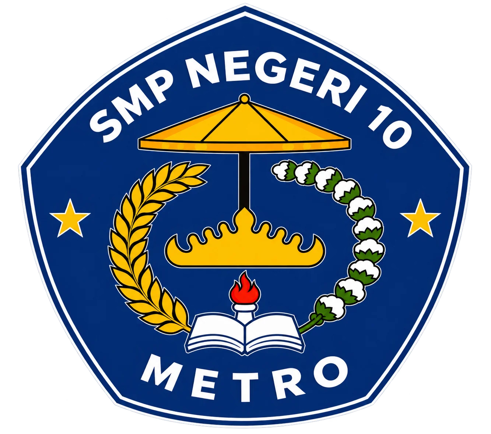

MAKNA LAMBANG
MAKNA DARI LAMBANG
UPTD SMPN 10 METRO

- PERISAI/PENTAGON BIRU
Bentuk dasar lambang; biru melambangkan keluasan ilmu pengetahuan dan ketenangan/kedalaman berpikir.
- PAYUNG
Ciri khas budaya Lampung, melambangkan perlindungan/pengayoman terhadap warga sekolah, sekaligus wibawa dan kehormatan adat.
- SIGER
Mahkota adat khas Lampung, melambangkan identitas kedaerahan, kehormatan, dan martabat.
- API/NYALA PELITA
Melambangkan semangat belajar yang tak pernah padam, cahaya ilmu pengetahuan yang menerangi.
- UNTAI PADI
Melambangkan kemakmuran dan kesejahteraan.
- UNTAI KAPAS
Melambangkan kesucian dan keadilan; bersama padi biasa diartikan sebagai cita-cita kemakmuran yang berkeadilan.
- BUKU TERBUKA
Lambang ilmu pengetahuan, menegaskan fungsi sekolah sebagai tempat menuntut ilmu.
- DUA BINTANG KUNING
Melambangkan ketakwaan kepada Tuhan Yang Maha Esa, sesuai sila pertama Pancasila.
- TULISAN "SMP NEGERI 10" & "METRO"
Identitas resmi sekolah dan lokasinya di Kota Metro, Lampung.